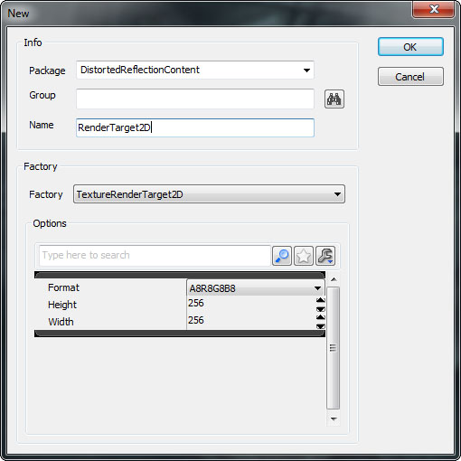
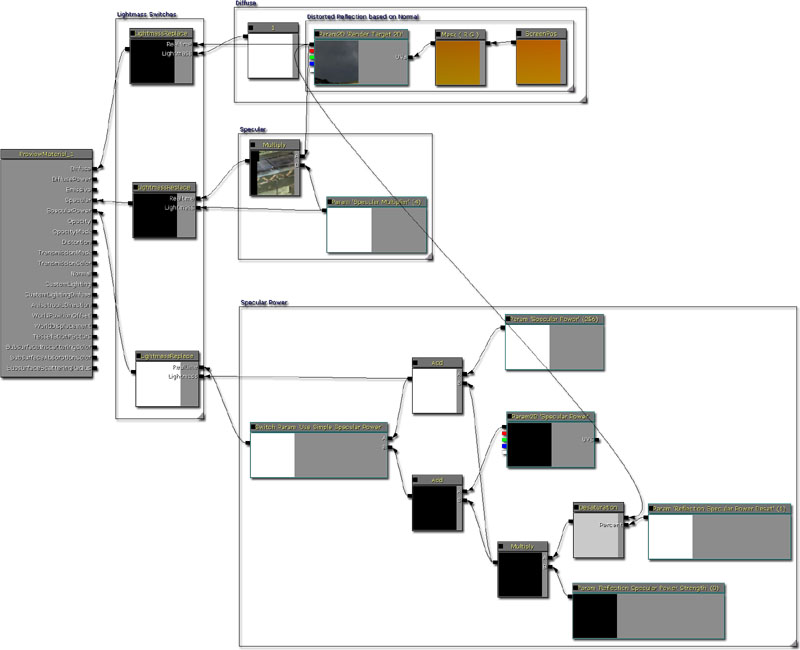
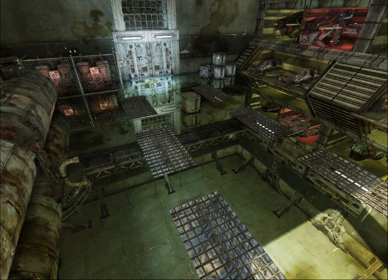
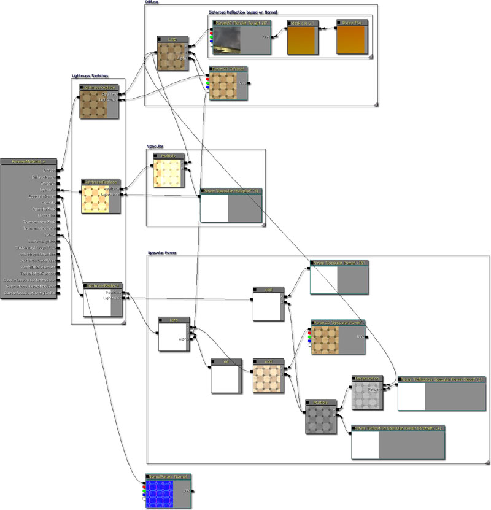
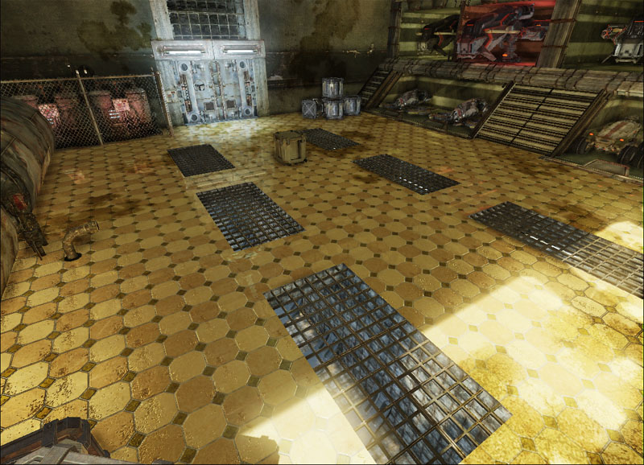
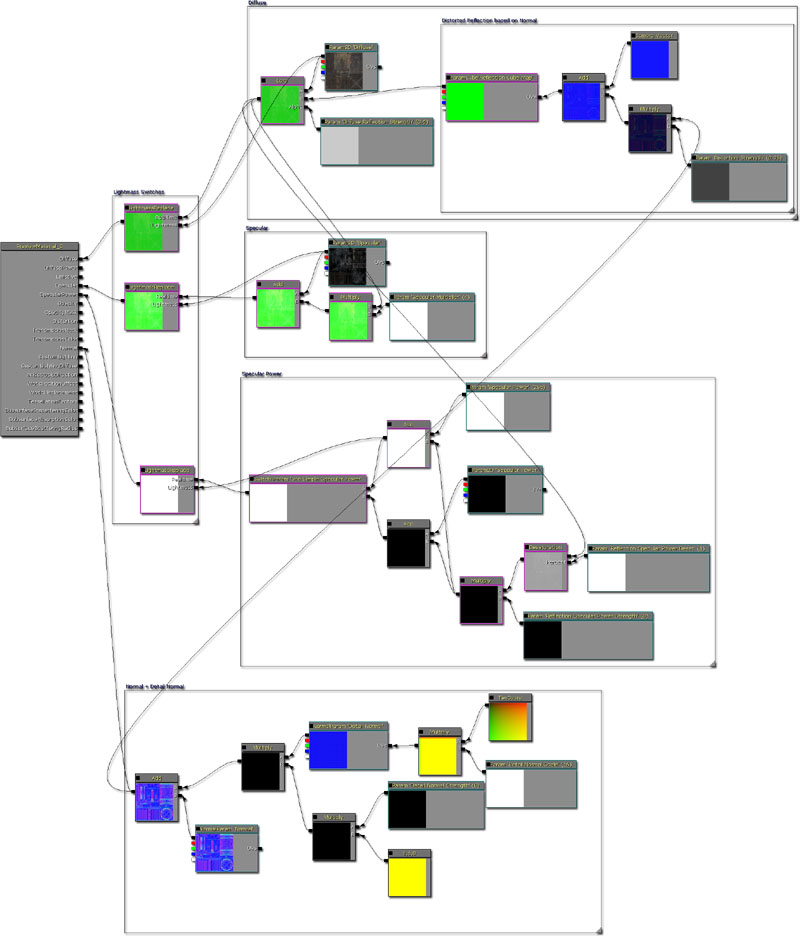
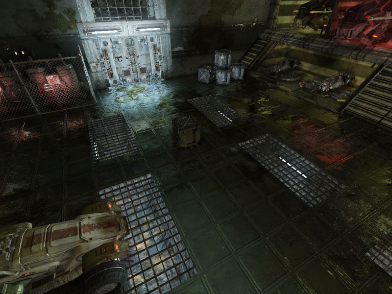
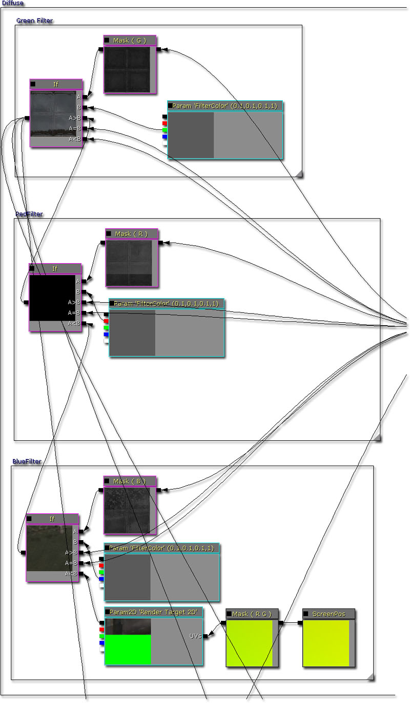
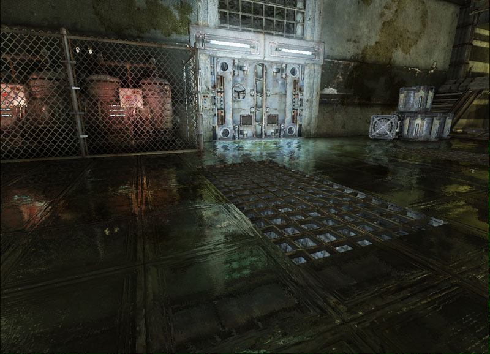
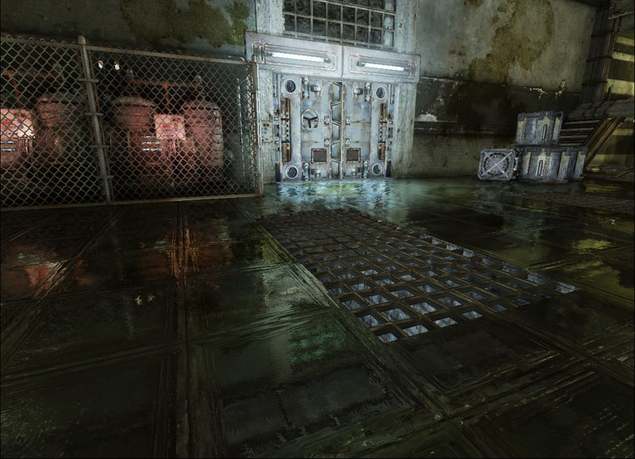

UDN
Search public documentation:
DevelopmentKitGemsCreatingDistortedReflectionKR
English Translation
日本語訳
中国翻译
Interested in the Unreal Engine?
Visit the Unreal Technology site.
Looking for jobs and company info?
Check out the Epic games site.
Questions about support via UDN?
Contact the UDN Staff
日本語訳
中国翻译
Interested in the Unreal Engine?
Visit the Unreal Technology site.
Looking for jobs and company info?
Check out the Epic games site.
Questions about support via UDN?
Contact the UDN Staff
왜곡된(distorted) 리플렉션 만들기
문서 변경내역: James Tan 작성. 홍성진 번역.
UDK 2011년 4월 버전으로 최종 테스팅, PC 호환
개요
머티리얼에 현실감을 더하기 위해 가끔 강하거나 묘한 리플렉션이 필요할 때가 있습니다. 퍼포먼스상의 이유로, 스태틱 큐브 맵을 오프라인에서 만든 다음 실시간에서 사용하여 이펙트를 끌어낼 수 있습니다. 무어의 법칙 덕에 실시간 리플렉션을 생성하는 데 사용할 수 있는 파워가 머티리얼에 사용할 수 있는 것보다 훨씬 많아지게 되었습니다. 거울, 대리석, 메탈과 같이 현실에서 반사성을 띄는 것을 쉽게 만들 수 있게 된 것입니다.
렌더 타겟
렌더 타겟은 화면 밖에 렌더되는 뷰포트입니다. 말하자면 월드의 시야를 나타내나, 화면상에는 표시되지 않습니다. 머티리얼에서 아주 유용하게 사용할 수 있고, 그 후 머티리얼 에디터에서 렌더 타겟을 원하는 식으로 변경할 수 있게 됩니다.
렌더 타겟 만들기
렌더 타겟 생성은 콘텐츠 브라우저에서 우클릭 한 번, 그런 다음 "New TextureRenderTarget2D" 를 선택하면 끝입니다. 패키지 이름, 옵션으로 그룹과 이름 입력입니다. 이 예제에서는 렌더 타겟 을 별도의 패키지가 아닌 맵 안에 저장하기로 했습니다. 렌더 타겟은 보통 특정 맵에서만 사용되니 겸사겸사 입니다. 물론 어떤 식이든 상관은 없습니다. 렌더 타겟 2D 조정을 위해 트윅할 수 있는 파라미터가 있습니다.
패키지 이름, 옵션으로 그룹과 이름 입력입니다. 이 예제에서는 렌더 타겟 을 별도의 패키지가 아닌 맵 안에 저장하기로 했습니다. 렌더 타겟은 보통 특정 맵에서만 사용되니 겸사겸사 입니다. 물론 어떤 식이든 상관은 없습니다. 렌더 타겟 2D 조정을 위해 트윅할 수 있는 파라미터가 있습니다.

- Format - RenderTarget2D 의 포맷
- A8R8G8B8 - 8 비트 RGBA, 값은 0 과 255 사이에서만 가능
- G8 - 8 비트 회색조, 값은 0 과 255 사이에서만 가능
- FloatRGB - Float RGB, 값은 부동 소수점 수 가능
- Height - RenderTarget2D 의 높이. 작을수록 퍼포먼스에는 좋습니다.
- Width - RenderTarget2D 의 폭. 작을수록 퍼포먼스에는 좋습니다.

- Address X X 주소 - 0.f 에서 1.f 밖에서 샘플을 뽑을 때 어떤 픽셀을 반환시킬지 조절하는 파라미터입니다.
- Address Y Y 주소 - 0.f 에서 1.f 밖에서 샘플을 뽑을 때 어떤 픽셀을 반환시킬지 조절하는 파라미터입니다.
- Force Linear Gamma 선형 감마 강제 - 이 렌더 타겟에 (감마 보정의 한 형태인) 선형 감마 스페이스를 사용하려면 참으로 설정하십시오.
- Needs Two Copies 사본 둘 필요 - 씬 자체 내에서 렌더 타겟을 사용하는 경우 거짓으로 설정하십시오. 메모리 절약에 도움이 됩니다. 렌더 타겟이 다른 목적으로 사용되는 화면 밖 버퍼인 경우, 사본을 둘 유지해야 합니다.
- Render Once 한번 렌더 - 렌더 타겟을 한 번만 렌더해야 하는 경우 참으로 설정하십시오. 절대 바뀌지 않는 씬 캡처에 좋습니다.
- Target Gamma 타겟 감마 - 렌더 타겟 텍스처의 감마를 조절할 수 있습니다.
- Force PVRTC4 PVRTC4 강제 - 렌더 타겟은 iOS 에 지원되지 않기에 사용되지 않습니다.
관련 토픽
씬 캡처 리플렉션 만들기
콘텐츠 브라우저의 액터 클래스 탭으로 가서 Scene Capture Reflect Actor 를 찾습니다.
 Scene Capture Reflect Actor 를 놓으려는 곳에 우클릭합니다. 리플렉션 진원지로 하려는 곳에 놓으십시오.
Scene Capture Reflect Actor 를 놓으려는 곳에 우클릭합니다. 리플렉션 진원지로 하려는 곳에 놓으십시오.

씬 캡처 리플렉션 프로퍼티 설정하기
SceneCaptureReflectActor 는 단지 SceneCaptureReflectComponent 에 대한 그릇일 뿐입니다.
- Texture Target 텍스처 타겟 - 씬 캡처를 렌더할 RenderTarget2D 입니다.
- Scale FOV FOV 스케일 - FOV 스케일입니다.
- Enabled 켜짐 - 씬 캡처가 켜졌는지 입니다.
- Enable Post Process 포스트 프로세스 켜기 - 이 씬 캡처에 포스트 프로세스를 켤지 입니다.
- Enable Fog 포그 켜기 - 이 씬 캡처에 포그가 켜졌는지 입니다.
- Clear Color 색 지우기 - 씬 캡처를 렌더하기 전 RenderTarget2D 를 지울 색입니다.
- View Mode 뷰 모드 SceneCapView_LitNoShadows - 씬을 라이팅포함 모드로 렌더하나, 그림자는 생략합니다. SceneCapView_Lit - 씬을 라이팅포함 모드로 렌더합니다. SceneCapView_Unlit - 씬을 라이팅제외 모드로 렌더합니다. SceneCapView_Wire - 씬을 와이어프레임 모드로 렌더합니다.
- Scene LOD 씬 LOD - 씬 캡처시 사용할 씬의 LOD 레벨을 조절할 수 있습니다.
- Frame Rate 프레임율 - 이 씬 캡처를 업데이트하기 위한 프레임율입니다.
- Post Process 포스트 프로세스 - 이 씬 캡처에 사용할 포스트 프로세스 체인입니다.
- Use Main Scene Post Process Settings 메인 씬 포스트 프로세스 세팅 사용 - 씬 캡처가 다소 동일하도록 씬 포스트 프로세싱 세팅을 사용합니다.
- Skip Update If Texture Users Occluded 텍스처를 사용하는 것이 가려지면 업데이트 생략 - 머티리얼, 액터가 현재 뷰에 있지 않으면 이 씬 캡처 업데이트를 생략합니다.
- Skip Update If Owner Occluded 오너가 가려지면 업데이트 생략 - 컴포넌트의 오너가 현재 뷰에 있지 않으면 이 씬 캡처 업데이트를 생략합니다.
- Max Update Dist 최대 업데이트 거리 - 카메라가 이 값보다 멀리 있으면 이 씬 캡처의 업데이트를 생략합니다.
- Max View Distance Override 최대 뷰 거리 덮어쓰기 - 리플렉션에서 원거리 오브젝트를 컬링할 때 사용합니다.
- Skip Rendering Depth Prepass 뎁스 프리패스 렌더링 생략 - 씬 캡처 렌더링시 뎁스 프리패스를 생략합니다. 씬 캡처가 작다면 뎁스 프리패스를 생략하는 쪽이 더 비쌉니다. (CPU 비용 vs GPU 비용)
- Max Streaming Update Dist 최대 스트리밍 업데이트 거리 - 오너와 뷰어의 거리가 이 유닛 이상 떨어져 있으면 씬 캡처에 대한 스트리밍 텍스처 업데이트를 생략합니다.
거울 만들기
머티리얼은 꽤 간단합니다. 제대로 설정해 줘야 하는 것은 라이트매스 스위치 뿐입니다. 라이트매스가 실행되면 렌더 타겟을 사용할 이유가 없어지는데, 카메라 뷰에 의존하기 때문입니다. 그렇기에 라이트매스 스위치 없이는 잘못된 디퓨즈 컬러가 (보통 밝은 녹색이) 사용됩니다. 이 문제를 고치려면 빛을 좀 더 적절히 반사시킬 수 있게끔, 라이트매스가 상수를 참조하도록 해야 합니다.
미러 머티리얼 레이아웃


대리석 만들기
대리석 머티리얼을 만드는 한 가지 방법은, 디퓨즈 텍스처와 리플렉션을 선형 보간하는 것입니다.
대리석 머티리얼 레이아웃


왜곡된 메탈 만들기
리플렉션을 왜곡하려면 노멀맵을 사용하여 UV 좌표를 오프셋시키기면 됩니다.
왜곡된 메탈 머티리얼 레이아웃


왜 리플렉션에 밝은 녹색 부분이 생기나요?
가끔 언리얼 엔진 3 가 렌더 타겟 속에 리플렉션을 렌더할 때, 사용할 수 있는 렌더 타겟 텍스처 공간 전체를 사용하지 않습니다. 클리어 색이 종종 녹색이기에, 디스토션 텍스처 룩업이 렌더된 범위 밖에 있으면 밝은 녹색 픽셀을 사용하게 됩니다. 안타깝게도 이것이 왜곡된 리플렉션에 나타나는 것이지요. 이 문제를 손보는 데는 두 가지 방법이 있습니다.

색으로 픽셀 걸러내기
한 가지 방법은 걸러내려는 색(여기선 밝은 녹색)과 일치하는 픽셀을 찾는 것입니다. 그런 픽셀을 찾은 다음 왜곡되지 않은 렌더 타겟을 사용합니다. 이 작업은 왜곡된 렌더 타겟 출력의 각 컴포넌트에서 if 문을 사용하여 해 냅니다. 먼저 왜곡된 렌더 타겟 출력의 녹색 채널을 찾아봅니다. 0.1f (바이트로 26) 보다 크면 빨강 채널을 검사하도록 필터링이 넘어가며, 아니라면 왜곡된 렌더 타겟 출력을 출력합니다. 빨강 채널을 검사하게 되면 0.1f 보다 아래인지 봅니다. 그렇다면 파랑 채널을 검사하고, 아니라면 왜곡된 렌더 타겟 출력을 출력합니다. 파랑 채널을 검사하게 되면 0.1f 보다 아래인지 봅니다. 그렇다면 왜곡 없이 렌더 타겟을 출력하고, 아니라면 왜곡된 렌더 타겟을 반환합니다.
최종 결과는 이렇습니다. 전보다 조금 낫긴 하지만, 바이리니어 필터링 때문에 초록 픽셀을 조금 놓쳤습니다.
그러나 이 방법으로 선택되는 픽셀을 살펴보니, 씬의 리플렉션에서 녹색 픽셀이었던 부분도 날아간 것을 볼 수 있습니다. 이런 젼차로 초록빛이 감도는 팔레트를 사용하는 씬이라면 이 방법은 그리 좋지 않습니다.
UV 좌표 제한(clamp)하기
다른 방법은 실제로 문제를 해결하기 위함입니다. 왜곡은 렌더 타겟 상의 UV 좌표 룩업을 조절하여 얻어냅니다. UV 좌표가 렌더 타겟의 렌더된 부분 밖으로 나가 밝은 녹색 부분으로 들어가게 되면, 밝은 녹색 픽셀이 사용되어 문제가 생기는 것입니다. 고로 왜곡된 UV 좌표 룩업을 제한하는 것이 이 문제를 해결하기 위한 방법 중 하나가 됩니다. 최종 결과는 이렇습니다. 예전이나 필터링 방법보다 낫지만, 화면 가장자리에 텍스처 밴딩이 조금 보이는데, 그리 눈에 띄지는 않습니다.
최종 결과는 이렇습니다. 예전이나 필터링 방법보다 낫지만, 화면 가장자리에 텍스처 밴딩이 조금 보이는데, 그리 눈에 띄지는 않습니다.

그러나 이 방법은 사용되는 렌더 타겟이 고정되어 있어야 하는데, 항상 그렇지 않다는 것이 문제입니다. UV 제한 리플렉션 때문에 몇몇 픽셀이 빠진 것이 선명한 리플렉션에 들어맞지 않을 수 있기 때문입니다.내려받기
- 이 젬에서 사용된 콘텐츠 DistortedReflectionContent.zip 내려받기.

{kind=link}
{kind=link}
{kind=link}